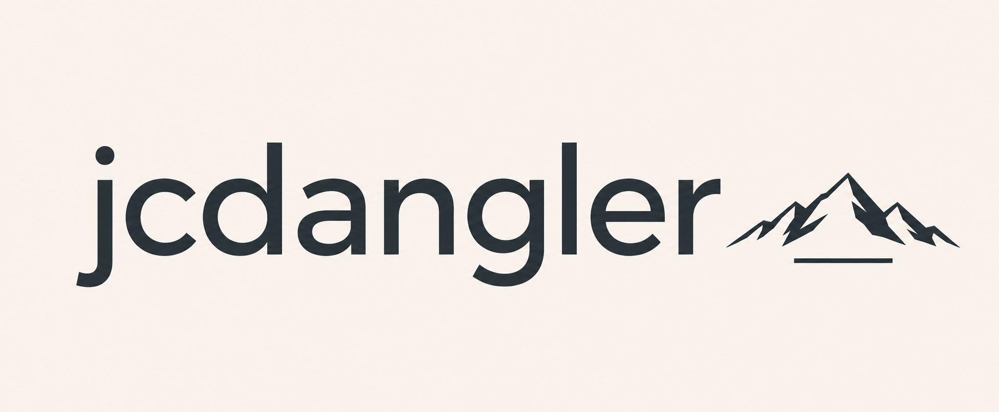

Atlanta, GA
Climbing • Running • Outdoors
I’m Dangler, an Atlanta-based climber and runner sharing training, bouldering, races, trail days, and the gear I use along the way.
About
I started climbing during COVID and primarily boulder. Running has become another major part of my training, from road races to trails. I create short-form outdoor content centered around progress, real-world experiences, and the communities around both sports.
Creator Stats
Outdoor Reels typically reach 1K–2.5K+ views.
Athlete Profile
Climbing
Bouldering • Indoor & outdoor • Climbing since 2020
Running
Road • Trail • 5K / 10K
5K PR: 20:11
Work With Me
I’m interested in partnerships with climbing, running, trail, outdoor, nutrition, and lifestyle brands that fit naturally with my training and content.
Product Testing • UGC • Ambassador Partnerships • Sponsored Content • Local Events
hello@jcdangler.com